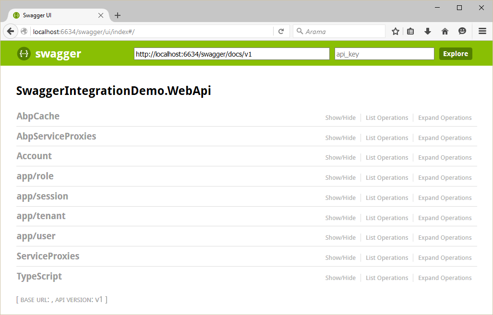

From it's web site: "....with a Swagger-enabled API, you get interactive documentation, client SDK generation and discoverability."
It's easy to integrate Swagger into your ASP.NET Boilerplate based ASP.NET Core application.
Install Swashbuckle nuget package to your Web project.
Add configuration code for Swagger into ConfigureServices method of your Startup.cs
public IServiceProvider ConfigureServices(IServiceCollection services)
{
//your other code...
services.AddSwaggerGen();
//your other code...
}
Then, add below code into Configure method of Startup.cs to use Swagger
public void Configure(IApplicationBuilder app, IHostingEnvironment env, ILoggerFactory loggerFactory)
{
//your other code...
app.UseSwagger();
app.UseSwaggerUi(); //URL: /swagger/ui
}
And finally, in order to send CSRF token when testing dynamic web api services from swagger ui, you need to add swagger ui's index.html file to your web project. It should be placed exactly under "wwwroot\swagger\ui" folder. Then you need to change onComplete method of swagger ui definition like this in index.html.
onComplete: function(swaggerApi, swaggerUi){
if(typeof initOAuth == "function") {
initOAuth({
clientId: "your-client-id",
clientSecret: "your-client-secret-if-required",
realm: "your-realms",
appName: "your-app-name",
scopeSeparator: " ",
additionalQueryStringParams: {}
});
}
if(window.SwaggerTranslator) {
window.SwaggerTranslator.translate();
}
var csrfToken = abp.security.antiForgery.getToken();
var csrfCookieAuth = new SwaggerClient.ApiKeyAuthorization(abp.security.antiForgery.tokenHeaderName, csrfToken, "header");
swaggerUi.api.clientAuthorizations.add(abp.security.antiForgery.tokenHeaderName, csrfCookieAuth);
}
See Swashbuckle documentation for more configuration options.
That's all. You can browse swagger ui under "/swagger/ui/index".
It's easy to integrate Swagger into your ASP.NET Boilerplate based application.
Install Swashbuckle.Core nuget package to your WebApi project (or Web project).
Add configuration code for Swagger into Initialize method of your module. Example:
public class SwaggerIntegrationDemoWebApiModule : AbpModule
{
public override void Initialize()
{
//your other code...
ConfigureSwaggerUi();
}
private void ConfigureSwaggerUi()
{
Configuration.Modules.AbpWebApi().HttpConfiguration
.EnableSwagger(c =>
{
c.SingleApiVersion("v1", "SwaggerIntegrationDemo.WebApi");
c.ResolveConflictingActions(apiDescriptions => apiDescriptions.First());
})
.EnableSwaggerUi(c =>
{
c.InjectJavaScript(Assembly.GetAssembly(typeof(AbpProjectNameWebApiModule)), "AbpCompanyName.AbpProjectName.Api.Scripts.Swagger-Custom.js");
});
}
}
Notice that, we inject a javascript file named "Swagger-Custom.js" while configuring swagger ui. This script file is used to add CSRF token to requests while testing api services on swagger ui. You also need to add this file to your WebApi project and use it's Logical Name in InjectJavaScript method while injecting it. It's content is:
var getCookieValue = function(key) {
var equalities = document.cookie.split('; ');
for (var i = 0; i < equalities.length; i++) {
if (!equalities[i]) {
continue;
}
var splitted = equalities[i].split('=');
if (splitted.length !== 2) {
continue;
}
if (decodeURIComponent(splitted[0]) === key) {
return decodeURIComponent(splitted[1] || '');
}
}
return null;
};
var csrfCookie = getCookieValue("XSRF-TOKEN");
var csrfCookieAuth = new SwaggerClient.ApiKeyAuthorization("X-XSRF-TOKEN", csrfCookie, "header");
swaggerUi.api.clientAuthorizations.add("X-XSRF-TOKEN", csrfCookieAuth);
See Swashbuckle documentation for more configuration options.
That's all. Let's browse /swagger/ui/index:

You can see all Web API Controllers (and also dynamic web api controllers) and test them.